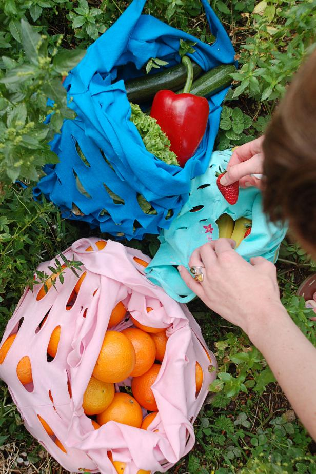
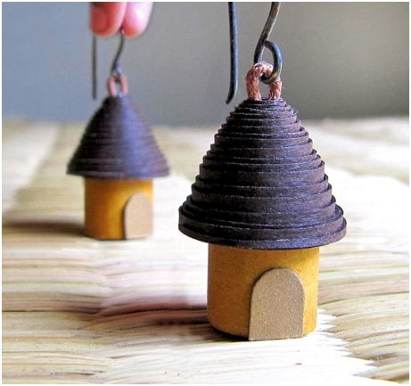
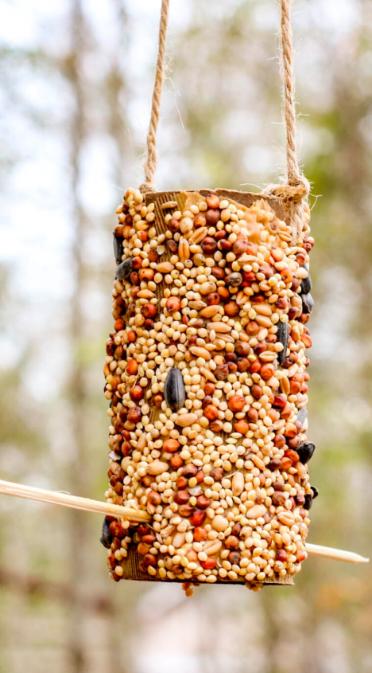

Sewing projects aren’t the only way to exercise your textile creativity.
Ever looked at your growing pile of scrap fabric or old clothing and thought, “I should really do something with all that”?
We’ve got just the eco craft for you: scrap fabric rag rugs!

T-Shirt Tote Bags
We all have those treasured old clothes we don’t wear, but also don’t have the heart to shred into pieces.Give those cherished old tees and sentimental hoodies a new lease on life with one of the most functionaland recycled eco-friendly crafts

Paper Bead Jewelry
Supporting conscious jewelry brands is one way to accessorize, but conscious crafting is another.
Recycled paper bead jewelry is a creative and unique way to transform your everyday paper waste into glitzy adornments for your style file.

Cardboard Bird Feeders
If you haven’t switched to zero waste toilet paper or reusable paper towels yet and are looking for ways to make your paper habit a little more sustainable, transform your discarded cardboard tubes into something delightful for our feathered friends.